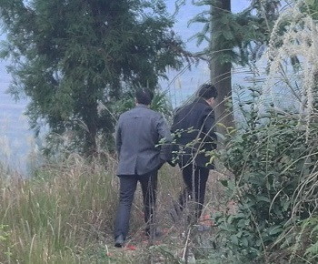
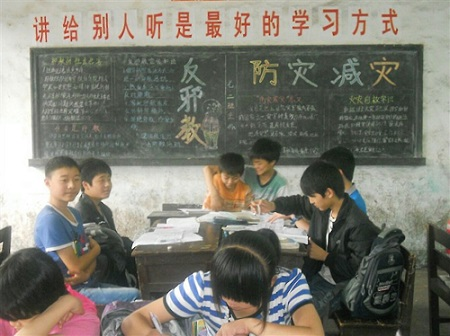

我的家人
下面是我对家人的介绍，你可以把它当作一个故事看，这个故事很简，但完全真实，如果你认真看了，你就了解我了。
奶奶
奶奶是一个很坚强的人，奶奶只有俩姐姐，而且都大她很多，她还很小的时候俩姐姐都嫁出去了。而父母已经很老了，家庭的重担就落到了她小小的肩上。家中的老人；圈里的畜牲；坡上的地，都靠她小小的双手运作起来。就这样幸苦地拖到了大，接了婚。可更苦的日子还在后面，就在爸爸一岁，幺爸还怀着的时候，爷爷在煤场出事去世了。而在那个年代并没有得到一分钱的赔偿。就这样，她又重操她的旧业。与以前不同的是，多了两个孩子，老人更老了。就连在怀了幺爸八个月的时候，奶奶还在地里干活。
如果说这是奶奶身体的承受，那它心理上承受的也不少。为了换取劳动力，爸爸很小就得去帮人干活，受到别人的挖苦和嘲笑，奶奶看在眼里，心里又是什么滋味。爸爸小时候成绩非常好，但因家庭经济原因辍学，看着爸爸渴望的眼神，奶奶的无奈，那时候谁又能懂。爸爸和幺爸每年只有一双鞋，看着他们下雨天宁愿光着脚干活也不愿弄湿了鞋子，奶奶心里又有多心酸。爸爸十几岁就出去打工，过了好久，爸爸寄回的照片上他还是出去时的那身衣服，她看着照片哭了多少次。幺爸十八岁时工作的火炮厂着火，全身烧伤，幺爸一个人在医院，她在千里之外一眼都不能看到，半年时间她头发全白了，难以想象她在这半年里经历了怎样的煎熬。
我小时候很长一段时间就是我和奶奶两个人生活，我在学校被别人欺负了，她找到了别人家里；走人户，有什么好吃的她都留给我；夏天的夜晚我们坐在坝子乘凉，她给我讲故事听；冬天她不准我搞雪，我们在小小的炉子屋里面烤火...
奶奶是一个很坚强的人，奶奶只有俩姐姐，而且都大她很多，她还很小的时候俩姐姐都嫁出去了。而父母已经很老了，家庭的重担就落到了她小小的肩上。家中的老人；圈里的畜牲；坡上的地，都靠她小小的双手运作起来。就这样幸苦地拖到了大，接了婚。可更苦的日子还在后面，就在爸爸一岁，幺爸还怀着的时候，爷爷在煤场出事去世了。而在那个年代并没有得到一分钱的赔偿。就这样，她又重操她的旧业。与以前不同的是，多了两个孩子，老人更老了。就连在怀了幺爸八个月的时候，奶奶还在地里干活。
如果说这是奶奶身体的承受，那它心理上承受的也不少。为了换取劳动力，爸爸很小就得去帮人干活，受到别人的挖苦和嘲笑，奶奶看在眼里，心里又是什么滋味。爸爸小时候成绩非常好，但因家庭经济原因辍学，看着爸爸渴望的眼神，奶奶的无奈，那时候谁又能懂。爸爸和幺爸每年只有一双鞋，看着他们下雨天宁愿光着脚干活也不愿弄湿了鞋子，奶奶心里又有多心酸。爸爸十几岁就出去打工，过了好久，爸爸寄回的照片上他还是出去时的那身衣服，她看着照片哭了多少次。幺爸十八岁时工作的火炮厂着火，全身烧伤，幺爸一个人在医院，她在千里之外一眼都不能看到，半年时间她头发全白了，难以想象她在这半年里经历了怎样的煎熬。
我小时候很长一段时间就是我和奶奶两个人生活，我在学校被别人欺负了，她找到了别人家里；走人户，有什么好吃的她都留给我；夏天的夜晚我们坐在坝子乘凉，她给我讲故事听；冬天她不准我搞雪，我们在小小的炉子屋里面烤火...
爸爸还在读书的时候，没交学费学校不发书，爸爸就只能看别人的，拖着拖着学校还是发了，学费只能等庄家收了卖了才有得交。白天忙农活，只有晚上做作业。有了他小时候得经历，他努力为我和妹妹创造更好的学习条件，在学习方面不管有什么需求，他都尽可能的满足我们，对我们的学习他也是非常严厉的。小时候我作业做不好被他撕过本子；他送我去学校鞋被洪水冲走了；送我去镇里打超贵的预防针...
妈妈缝衣服缝的真的好，完全看不出来缝过。还记得她有一次打工回来给我带了一个我 从未见过的大西瓜哄我说是在屋后的小山林里摘的；记得她给我拐枣说这个可以吃；记得一次我差点走丢后她红红的眼眶；记得她又一次出去打工时穿的蓝白衬衫...
小时候经常欺负妹妹，不知道她还记得我背她上去上学吗，从她上初中开始，我们就一年都没见过几次了，如今她也高二了，希望一年后的她也能金榜题名。

爸爸和幺爸给爷爷上坟
妈妈有八个兄弟姐妹，所以我的表兄弟姐妹就更多了，小时候哥哥姐姐们对我非常照顾，谢谢他们！每年过年都很热闹，这是我们过年后在一起打牌。

这是我堂弟，小时候去哪都要我背，还特别犟，一次我要去读书，他哭着追了我好远的路。
多久不见，不知他是否还调皮；是否认真学习；是否还爱玩游戏...
多久不见，不知他是否还调皮；是否认真学习；是否还爱玩游戏...
我的初中

逢春学校
这是我小学和初中上的学校，很小也很偏僻，但这里有陪我长大的小伙伴；有最纯真的友谊；有最好的老师，左图顶上那句话是老师亲手写来送给我们的，至今受益。
这是我小学和初中上的学校，很小也很偏僻，但这里有陪我长大的小伙伴；有最纯真的友谊；有最好的老师，左图顶上那句话是老师亲手写来送给我们的，至今受益。
我的高中
重庆市綦江实验中学校（Chongqing Qijiang Experimental Middle School）地处巍巍古剑山下，潺潺綦河畔，毗邻美丽的南州公园，是重庆市重点中学、全国教育科学“十五”规划国家重点课题学校、全国青少年计算机科技创新实践教育示范基地、全国青少年普法教育先进单位、教育部首届全国青少年学生法治知识网络大赛杰出组织学校、綦江区师资培训中心、普通话测试中心和现代教育技术培训考试中心。
学校始建于1942年，1999年綦江师范学校与綦江教师进修学校合处办学，2009年1月13日，学校被重庆市人民政府命名重庆市重点中学，实施完全的普通高中教育。
重庆市綦江实验中学校创建于1942年8月，始为“綦江县立简易师范学校”。
1948年8月，学校更名为“綦江县立师范学校”。
新中国成立后，1950年11月学校更名为“川东区綦江师范学校”。
1952年11月，更名为“四川省綦江师范学校”。
重庆直辖后，学校更名为“重庆市綦江师范学校”。
1999年1月4日，学校与綦江县教师进修学校合处办学。
2009年7月，綦江县教师进修学校剥离。
2010年6月最后一届中师生毕业，学校师范育人圆满结束。
辉煌的68个春秋，綦师共培养师范毕业生10913人，高中毕生业生5243人，职后培训108399人，特别是在培养扎根农村山区小学教师，培养学生教师技能方面做出了巨大的成绩。学校被重庆市评定为中师办学水平“优秀”等级，先后被评为“全国五四红旗团委创建单位”“重庆市民主管理示范学校”“重庆市德育工作先进单位”“重庆市园林式单位”。
2001年9月，学校开办高中班。2005年4月，重庆市教委批准学校增设“重庆市綦江实验中学校”，并于2005年9月挂牌，正式开办普通高中教育。2009年1月13日，学校被重庆市人民政府命名重庆市重点中学，实施完全的普通高中教育。
学校始建于1942年，1999年綦江师范学校与綦江教师进修学校合处办学，2009年1月13日，学校被重庆市人民政府命名重庆市重点中学，实施完全的普通高中教育。
重庆市綦江实验中学校创建于1942年8月，始为“綦江县立简易师范学校”。
1948年8月，学校更名为“綦江县立师范学校”。
新中国成立后，1950年11月学校更名为“川东区綦江师范学校”。
1952年11月，更名为“四川省綦江师范学校”。
重庆直辖后，学校更名为“重庆市綦江师范学校”。
1999年1月4日，学校与綦江县教师进修学校合处办学。
2009年7月，綦江县教师进修学校剥离。
2010年6月最后一届中师生毕业，学校师范育人圆满结束。
辉煌的68个春秋，綦师共培养师范毕业生10913人，高中毕生业生5243人，职后培训108399人，特别是在培养扎根农村山区小学教师，培养学生教师技能方面做出了巨大的成绩。学校被重庆市评定为中师办学水平“优秀”等级，先后被评为“全国五四红旗团委创建单位”“重庆市民主管理示范学校”“重庆市德育工作先进单位”“重庆市园林式单位”。
2001年9月，学校开办高中班。2005年4月，重庆市教委批准学校增设“重庆市綦江实验中学校”，并于2005年9月挂牌，正式开办普通高中教育。2009年1月13日，学校被重庆市人民政府命名重庆市重点中学，实施完全的普通高中教育。